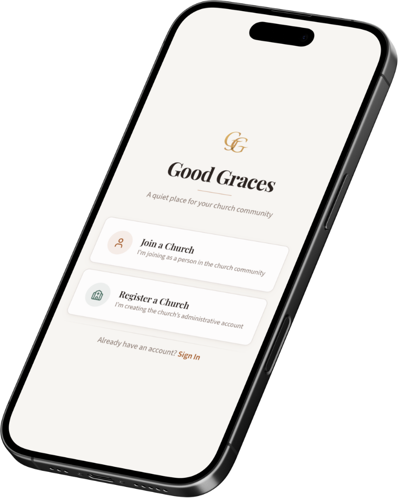
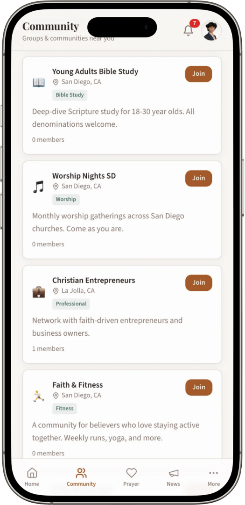
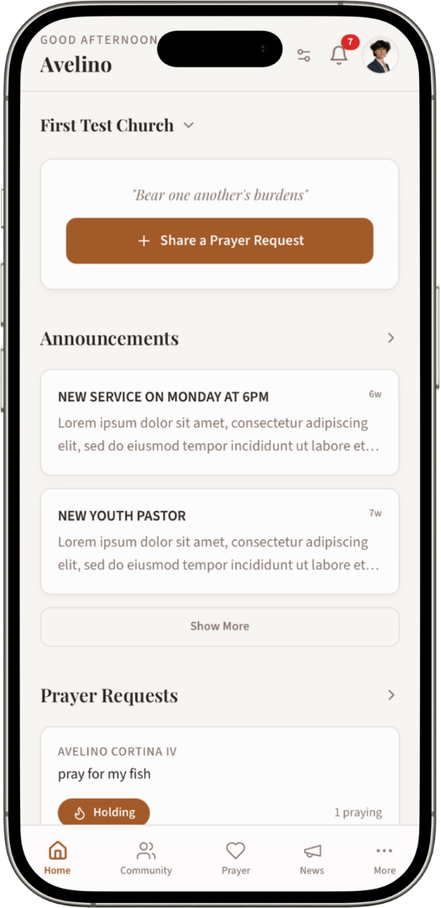
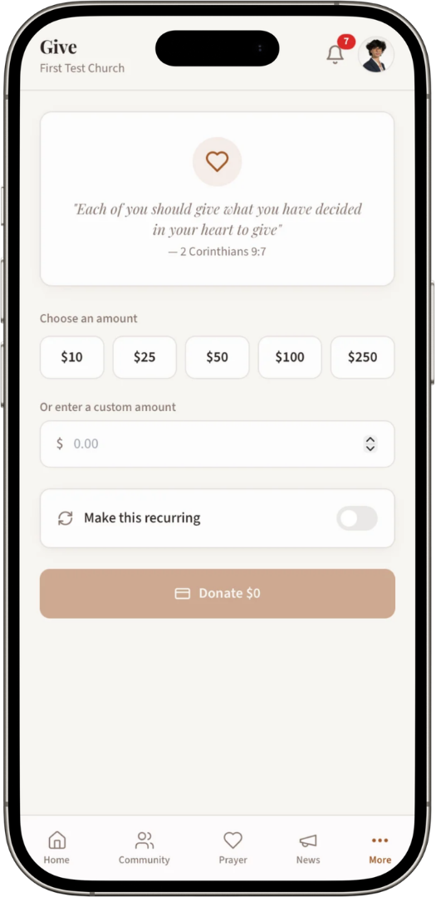
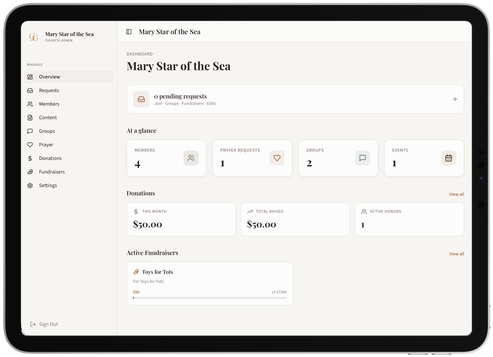

Good Graces is building a modern platform for churches to better connect with their communities, organize outreach, support members, and create meaningful engagement beyond Sunday mornings. We believe faith communities deserve technology that feels thoughtful, human, and beautifully designed.
Messaging, announcements, giving, volunteer coordination, events, outreach, and member engagement all in one experience.
Faith shouldn’t only exist on Sundays. Good Graces creates ongoing connection between churches and the people they serve.
Designed to grow from local congregations to national church networks while maintaining intimacy and trust.
Many churches struggle with outdated systems, disconnected communication, and limited digital engagement. Meanwhile, younger generations increasingly expect seamless, modern experiences in every aspect of life — including faith.
Good Graces bridges that gap through intentional design and human-centered technology. We are not trying to replace churches. We are helping them reach people more effectively, foster real relationships, and strengthen their communities.

Every part of Good Graces is designed to reduce friction and increase connection between churches and their communities.

Share updates, prayer requests, volunteer opportunities, announcements, and events in a centralized social experience.

Everything is designed to be simple and intuitive, with key tools and updates available at a glance on a personalized home dashboard tailored to each church.

Secure donations, recurring giving, campaigns, and transparent financial support integrated directly into the platform.
Good Graces gives churches a modern infrastructure for communication, engagement, outreach, and organization — without losing the warmth and humanity that makes faith communities special.
Event management and announcements
Volunteer and ministry coordination
Prayer groups and community interaction
Secure digital giving and support

Churches remain one of the largest and most influential community networks in the world, yet many still rely on fragmented tools and outdated systems. Good Graces is positioned to become the central platform for church engagement, communication, and digital community building.
Thousands of churches across the U.S. alone are actively searching for better digital infrastructure.
Retention grows through social connection, participation, and local faith engagement.
Good Graces aims to become the operating system for healthy, connected faith communities.
Whether you're a church looking to modernize your community experience or an investor interested in meaningful technology, Good Graces is building something designed to last.